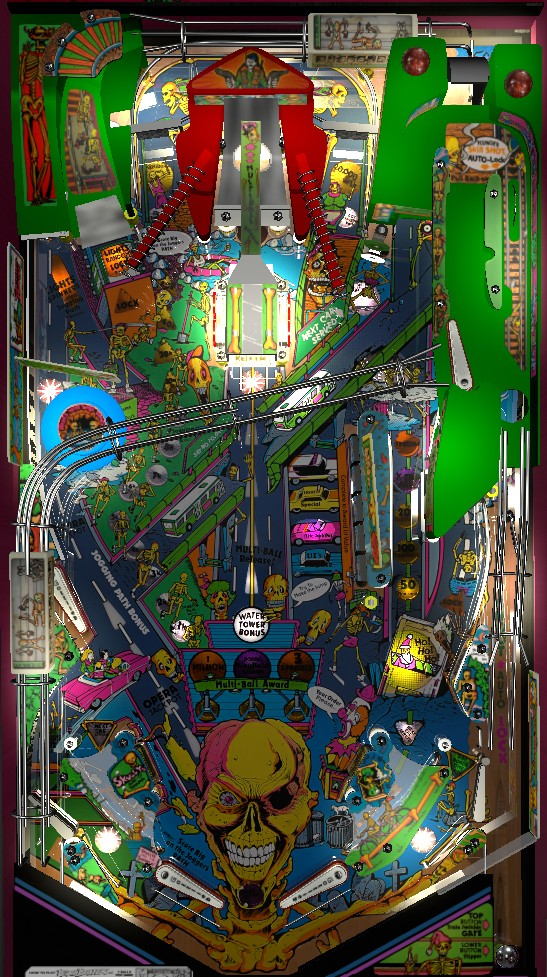

Play multiball as frequently as possible. Two different precise-power skill shots allow you to lock a ball on the plunge: on that hits the top right switch in the shooter lane and rolls back down to the lower right lock, and one that goes down the auto-lock lane toward the mini-flipper, where you have to press the second right flipper button to direct the ball to the left out lane lock. With one or more balls locked, shoot the ramp to start multiball. In multiball, hit any switch to advance toward 1,000,000 points and 2x playfield. Spinners lit white advance bonus; the captive ball collects the bonus and lights both spinners yellow for 20,000 per spin for one shot.
The below picture of Bone Busters, Inc.'s playfield was taken from the VPX recreation by Aubrel.

A plunge that escapes the shooter lane can have 4 different outcomes, listed here from weakest to strongest.
Balls can be locked at the lower right saucer or left out lane on any plunge as described above. Outside of the plunge, balls are locked for multiball using the left ramp, which is always lit for Light Random Lock unless there are already balls locked at all three saucers. When you shoot the ramp, a callout describes which of the three locks has been lit.
If the gate is in the wrong position for a Moon Street or Headquarters lock, you'll need to earn that lock yourself by either shooting the lower right saucer or ending up in the left out lane naturally, or shooting the left ramp to try again.
If at least one ball is locked anywhere in the game, make a full shot to the center ramp to start multiball. Multiball can begin with 2, 3, or 4 balls depending on whether you locked 1, 2, or 3 balls first.
During multiball, every switch in the game advances the Bony Bonus. The Bony Bonus starts at 50. Advancing the Bony Bonus to 100 scores an instant 1,000,000 points and causes the Bony Bonus to jump straight to 150. Advancing the Bony Bonus to 200 qualifies 2x playfield scoring during any multiball for the remainder of the current ball in play. Advancing the Bony Bonus to 300 scores 3 Specials, which is worth 1,500,000 points in competition/novelty play. (Reaching 200 Bony Bonus does not cause it to jump straight to 250.) Bony Bonus can continue to be built past 300, but there are no further awards. If you play multiball multiple times in the same turn, your Bony Bonus (and qualified 2x playfield if applicable) are held over, but draining out of single ball play and fully ending a turn causes the Bony Bonus to reset for the next ball.
Ideal play in this multiball is to shoot spinners. These build your Bony Bonus the fastest. Shooting the captive ball lights the spinners for 20,000 per spin for one rip, which can be doubled to 40,000 per spin using the playfield multiplier; this plus the instant 1,000,000 points are the fastest way to quickly and reliably earn score in the game.
At any given time, one of the two top spinners will be lit white for Jogging Path. Each spin of the spinner lit for Jogging Path adds 1,000 points to the Jogging Path bonus, up to a maximum of 159,000 points. The Jogging Path bonus is collected at the end of the ball, or any time the captive ball is hit. The captive ball is in the back left of the game, just left of the ramp, and is most commonly made via a shot that runs parallel to the upper left flipper an along the edge of the game, past the pop bumper. In addition to scoring the Jogging Path bonus, the captive ball also lights both spinners yellow for 20,000 points a spin. The yellow lights at the spinners do not time out, but as soon as either spinner is hit, the yellow lights will go out once both spinners stop. Spinners that are not lit yellow score 1,000 points per spin only.
Each drop target down scores 5,000 points. Completing the bank gives the award associated with the lit car next to the bank. To rotate which car is lit, make the lit in lane, or hit the Next Car Served standup target just to the right of the right spinner. To switch which in lane is lit, hit the wall switch behind the drop targets. The unlabelled white car lights Extra Ball at the loop shot; the yellow car lights Special at the loop shot; the pink car lights Opera Jackpot; and the blue car awards Liz's Surprise.
Opera Jackpot is a carryover jackpot award. It starts at 250,000 each time the machine is turned on, is increased by 50,000 each time one of the standup targets on either side of the center ramp is hit, maxes out at 3,000,000, carries over across players/balls/games until it is won or the machine is powered off, and resets to 250,000 when it is won. The only way to collect the Opera Jackpot is to complete the drop targets when the pink car is lit, then shoot the captive ball.
Liz's Surprise is a score award worth 100,000 points times the ones digit of the number of steps you have taken on the Jogging Path. If your current Jogging Path bonus is 37,000 points, for example, the 7 in the ones place means your Liz's Surprise is 700,000 points. If your Jogging Path step count is a multiple of 10, Liz's Surprise is worth 900,000 points instead of 0.
A full loop shot is made from the upper flipper and follows the roadway on the playfield that is inhabited by buses. It makes a loop in the top right underneath the skill shot area, then falls down into the lane behind the drop targets. At the start of any ball, the loop shot's value is 50,000 points, and making the loop shot increases its value to 100,000, then 200,000, then extra ball, then Special. The loop shot's value can also be immediately increased to extra ball or Special as a drop target award. If the extra ball or Special is lit from the normal loop shot sequence, it appears to be untimed, but if the extra ball or Special is lit from a drop target award, it will only stay lit for about 8 seconds before reverting back to its previous value. Extra ball and Special both score 500,000 points in competition/novelty play.
Balls launched out of the lower left saucer, either at the start of multiball or by trying to lock a ball there when a ball is already present, commonly make a full loop shot.
Any ball that comes down the lane behind the drop targets, whether on a loop shot or a plunge, briefly opens a free ball gate in the right out lane as an anti-frustration measure to defend against the possibility of a successful loop shot bouncing into the out lane instead of falling into the right in lane. The gate closes when another switch is scored.
The Water Tower bonus starts each ball at 20,000 for each player. Each hit to the blue pop bumper on the left side of the game adds 20,000 to the Water Tower bonus. The Water Tower bonus is collected and reset back to 20,000 when a full ramp shot is made, regardless of whether that ramp shot started multiball or not. The Water Tower bonus is uncapped and will roll over back to 0 if it is advanced past 9,980,000, but this is a largely irrelevant limitation, as any Water Tower value over 1,000,000 is incredibly rare.
Hitting the wall switch behind the drop targets qualifies one out lane with a green light for Add Bonus Time, or switches which out lane can has the green light if one is already qualified. Draining down a lit green out lane adds 10 seconds to the length of your bonus time. Bonus time is played immediately after each player's final ball. All locked balls are kicked out, and balls can be continuously plunged from the shooter lane until the time expires if there are ever less than 2 in play. When time runs out, the flippers lock and all balls are allowed to drain. The bonus time countdown does not wait to start until ball(s) are plunged, so don't walk away too soon or you may waste your bonus ball time.
Bone Busters, Inc. has a conventional in/out lane setup, but the slingshots and the entrances to the bottom lanes are much shorter than on most games. The lock saucer in the left out lane and free ball gate in the right out lane are described in previous sections.
Bonus is advanced 1,000 points for each spin of a spinner that is lit white for Jogging Path, up to a maximum of 159,000 points. This bonus is collected at the end of the ball or any time the captive ball is hit. The bonus cannot be multiplier or carried from ball to ball.